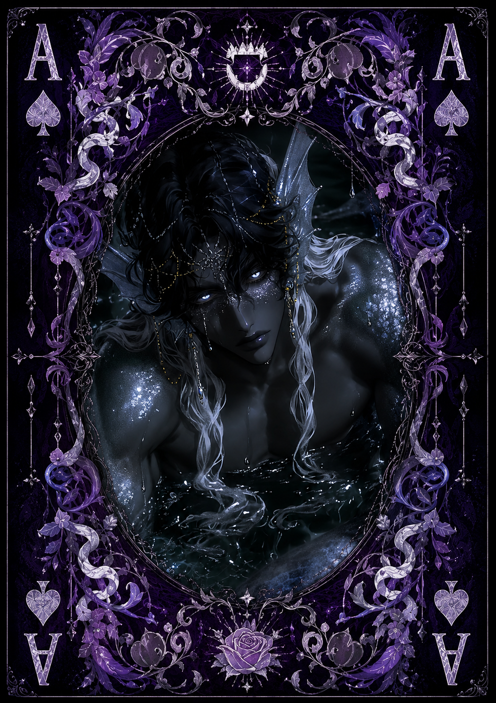

| Race | Abyssal Triton |
| Gender | Male |
| Age | 173 Years |
| Nation | Velmoris |
| Weapon | Tidefang Spear |
| Magic | Abyssal Water Magic |
Nythara is a wandering triton who roams the waters surrounding Velmoris in search of the home he lost long ago. He belongs to a rare species of triton now dangerously close to extinction, leaving him with little knowledge of whether others of his kind still survive somewhere beyond the seas he has explored.
Years of isolation have made Nythara deeply hostile toward strangers. He is solitary, aggressive, and notoriously rude, often attacking those who approach him before bothering to learn their intentions. Trust does not come naturally to him, and attempts at conversation can quickly become confrontational.
Nythara possesses considerable physical strength and control over Abyssal Water Magic, allowing him to manipulate the darker currents of the sea. He fights with a Tidefang Spear and relies on speed and aggression to overwhelm opponents. While he is far from the most powerful creature inhabiting Eryndor's oceans, his unpredictable temperament makes encounters with him particularly dangerous.
Behind his hostility lies a relentless desire to discover where he truly belongs. Nythara continues traveling from one territory to another, searching for traces of his species and anything that might lead him back home. His aggression keeps almost everyone at a distance, leaving him trapped between wanting to find others like himself and refusing to trust nearly anyone he meets.